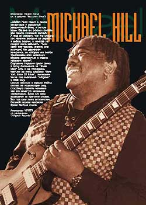

Michael HillМайкл Хилл и его группа "Blues Mob"
высекают форму блюза XXI века!!!
Встретить такие восторженные слова в последнее время — не редкость в журналах "Blues Revue", "Living Blues" и "Guitar Worls". Три альбома Майкла Хилла на фирме "Alligator Records" один за другим последовательными мощными ударами вознесли и закрепили Майкла Хилла и его группу на современном блюзовом Олимпе.
Хилл — сравнительно молодой, по блюзовой возрастной шкале, музыкант. Ему всего 47. И родился он не в дельте Миссисипи и не в южной части Чикаго, как подобает классикам блюза, а в Бронксе, в так называемой спальне Нью-Йорк Сити. А вот зато его родители были исконными выходцами с Юга, со всеми музыкальными последствиями для подрастающего Майкла. И все же основным музыкальным шоком, определившим всю его жизнь, был вовсе не тот застольный, домашний фолк-блюз, который он наверняка впитал в себя с молоком матери. Майкл вспоминает, что все у него началось с Джимми Хендрикса.
Когда в 1969 году он впервые увидел Джимми воочию, на сцене "Fillmore East", Майкл и на гитаре-то не умел играть. Именно тогда, уже в 17 лет, он взял в руки свой первый инструмент. А через год овладел им так, как будто играл с пеленок. После Хендрикса у Майкла Хилла были и другие ориентиры. Би Би Кинг, Альберт Кинг, и Альберт Коллинз. Однако он всегда искал свой собственный саунд. Увлекшись однажды Бобом Марли, он обнаружил, что тот исполняет только собственные сочинения. И Майкл сфокусировался на сочинительстве. Он нашел и нужные слова, и артикуляцию, и в конце концов это помогло ему создать свое собственное звучание, построенное из мощнейшего сплава блюза, регги и хэви-рока.
В середине 70-х Хилл интенсивно работал в студиях и на сцене как сессионный сайдмен за спинами у Литлл Ричарда, Клары Томас, Арчи Белла и Гарри Белафонте. А затем он записывался с самим Би Би Кингом. Однако даже талантливый музыкант, не имеющий достаточно громкого имени (особенно в те годы), не в состоянии был зарабатывать на хлеб музыкой. После сессии с Би Би Кингом и Литлл Ричардом Майкл исправно крутил баранку городского такси, не отказываясь от разной другой менее квалифицированной, но более пыльной работы. Таким образом, долгие годы он брался за гитару лишь в свободное от основной работы время и даже не ради дополнительного заработка, а скорее, потому что уже не мыслил жизнь без сцены.
Грандиозный прорыв произошел совсем неожиданно. Всего пять лет назад. С выходом альбома "Bloodlines". Это был запоздалый, но сногсшибательный первенец, рожденный на "Alligator Records".
Настольный журнал всех блюзовых фанатов "Living Blues" вручил Майклу Хиллу и его группе приз критиков, признавших этот диск лучшим дебютным альбомом за 94-й год. И даже не щедрый на позвалы журнал "Rolling Stone" подобрал яркие и восторженные выражения по этому случаю: "Майкл Хилл и его группа "Блюз Моб" создали огнедымящуюся смесь из тяжелых элементов Роберта Крея и Джимии Хендрикса". А "Chicago Sun-Times" в своем восхищении Хиллом превзошла всех остальных: "Никто со времен изобретения Мадди Уотерсом электрического блюза не повернул так основательно курс этой музыки, как Майкл Хилл. Он и его группа высекают форму блюза XXI века".
Второй альбом "Have Mercy!" вышел также на "Alligator Records" в 1996 году. И произвел не меньший фурор, как среди критиков, так и фанов. Все 13 треков были написаны самим Майклом, зреющим как композитор прямо на глазах. "Живая лирика городских улиц со всей, подчас грубоватой, реалистической экспрессией жизни", — так на сей раз лаконично, но без преувеличений определила содержание второго диска "Pittsburgh Post".
После триумфа второго альбома Майкл Хилл и его группа "Blues Mob" отправляются в свой первый кругосветный концертный тур. Успешно начав его на фестивале блюза в Чикаго, они показались в Австралии, затем в Бразилии и Скандинавии.
"Мы выкладывались на каждом концерте так, словно играли последний раз в жизни", — говорит Майкл. — "Единственное, чего мы желали, так это перевернуть зал вверх ногами. Это идеальное положение для контакта с аудиторией"...
...Майкл Хилл имеет в своем репертуаре и серьезный раздумчивый блюз, и легкие вещи. Однако он склонен считать рок просто неплохой шуткой. А еще он говорит, что эта музыка как явление рождена на радость и забаву людям, и никогда не следует этого забывать. "Если наше шоу удалось, значит, оно выглядит, как дружеская вечеринка, на которую мы всегда приглашаем всех желающих хорошо встряхнуться и славно провести время".
Ощущение пирушки среди своих в доску блюзменов из "Blues Mob" есть и на последнем, третьем по счету, альбоме "New York State Of Blues", вышедшем также под эмблемой "Alligator" в 1998 году.
Самым важным в музыке Майкл считает ее исцеляющую силу, способную поднять человека над его зачастую мнимыми проблемами. Блюз XXI века высекается из крепкого сплава. Это под силу лишь оптимистам. Сильной породе человека. Вроде Майкла Хилла.
По материалам "Alligator Records"
Александр ЧЕЧЕТТ
Перепечатано из журнала jazz-квадрат